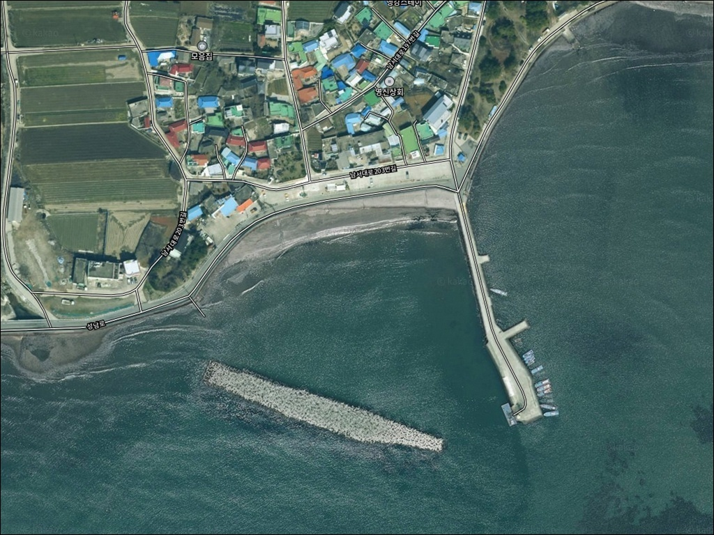
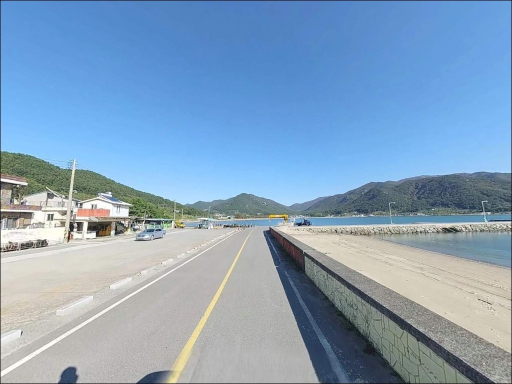
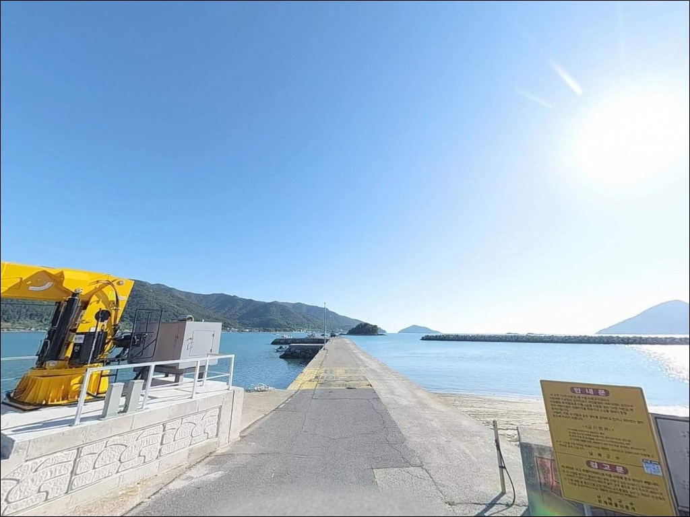
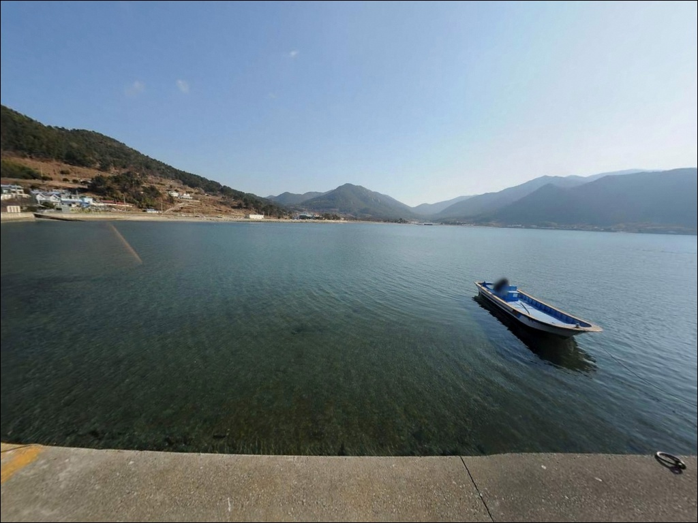
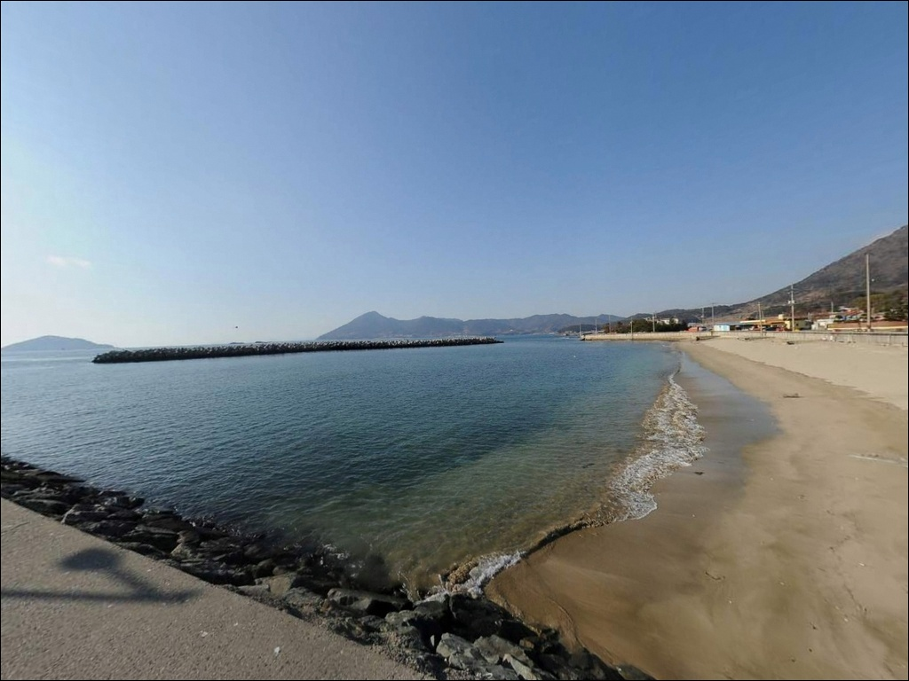
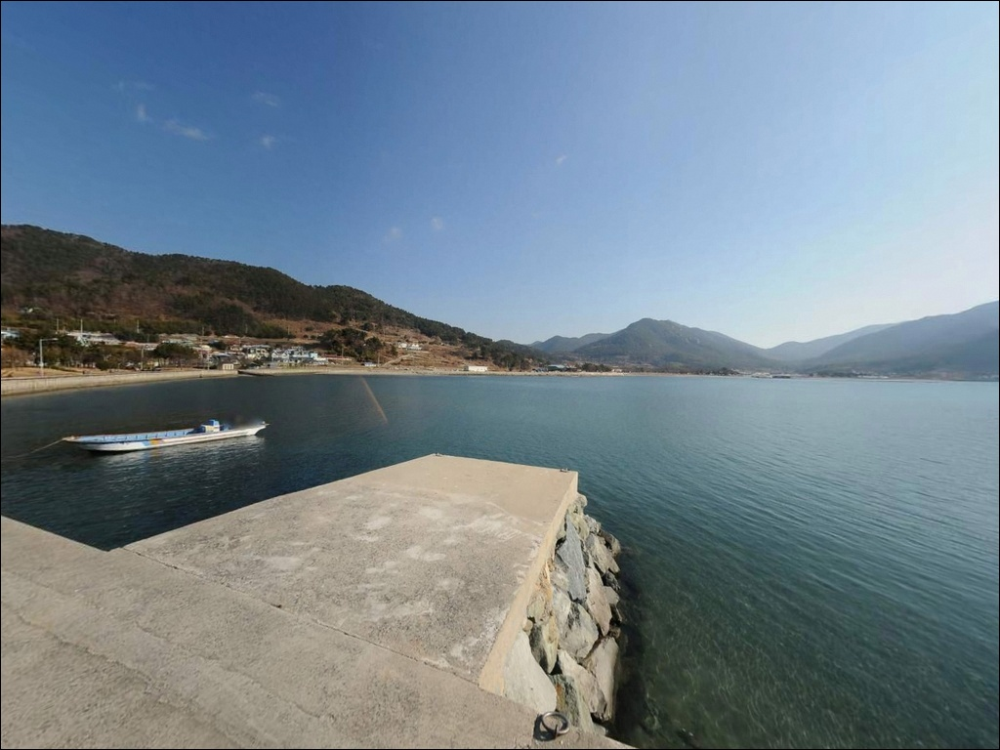
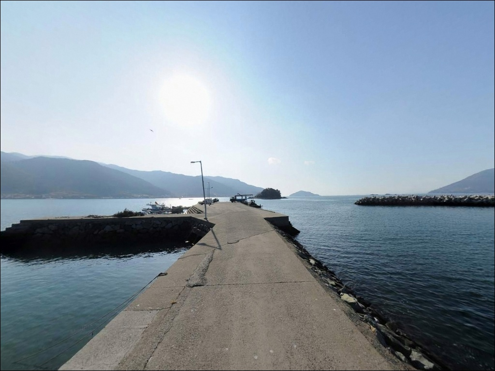
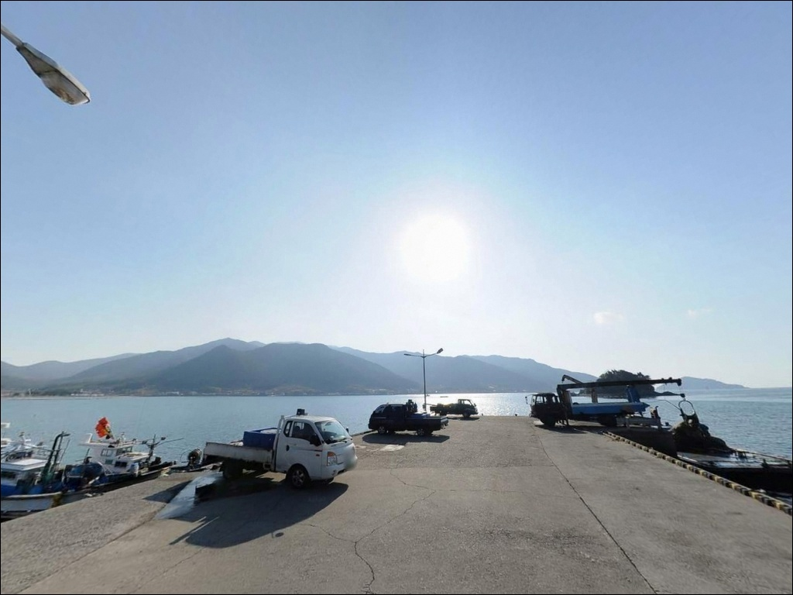
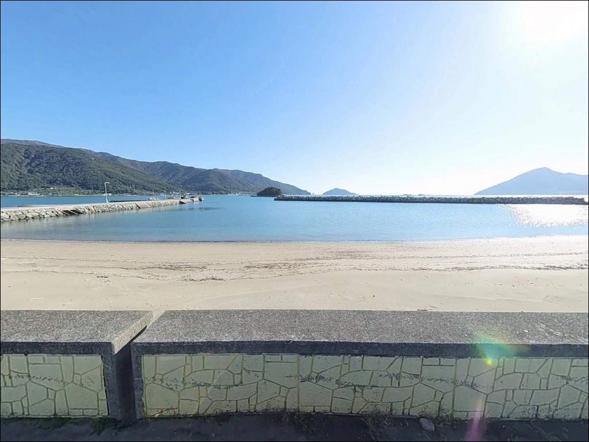

남해 화계방파제 낚시, 낙조 조류 2.3kn에서 갈리는 물때 타이밍
이 페이지에는 광고(제휴 링크 포함)가 있으며, 광고 링크를 통해 구매하면 운영자가 판매 수익 또는 수수료를 받을 수 있습니다. 포인트 사진: 카카오맵 스카이뷰·로드뷰. 이 페이지의 지도·사진 이미지는 카카오맵의 실제 서비스 이미지와 다를 수 있습니다.


포인트 안내
화계방파제
경남 남해군 이동면 화계리 268-1
남해 이동면 화계방파제를 찾는 낚시인이
가장 많이 놓치는 판단은
물때 확인 없이 진입하는 것입니다.
낙조 시 조류가 최대 2.3kn까지 강해지는 이 해역에서는
채비를 바닥에 안착시키는 것 자체가
어려워지는 타이밍이 존재합니다.
방파제 구조와 수심 여건은 충분하고,
진입로와 주차 공간도 비교적 안정적입니다.
물때 하나만 제대로 계산하고 들어가면
원투부터 에깅, 찌낚시까지
복수의 낚시 방식을 펼칠 수 있는 포인트입니다.
이 글은 화계방파제의 진입 여건, 차박 환경,
낚시 지형 분석, 방식별 공략 조건에 집중합니다.
조황 단정이나 특정 어종 보장은
이 글의 범위에 포함되지 않습니다.

1. 진입 동선과 차량 접근 여건
남해대로(19번 국도) 기준으로
화계마을 방면 진입로는
전 구간 포장 상태가 유지되어 있습니다.
왕복 2차선 수준의 도로가 방파제 앞까지
직선으로 연결되며,
캠핑카나 대형 SUV도 무리 없이 진입 가능한 폭입니다.
방파제 시작 지점과 선착장 주변에
넓은 콘크리트 공터가 확보되어 있으며,
차량 10대 이상이 수용 가능한 규모입니다.
대형 차량의 회차 반경도 충분히 나오는 구조여서
진입 시 별도의 사전 확인 없이도
큰 무리 없이 접근할 수 있는 편입니다.
주차 후보는 방파제 바로 앞 콘크리트 공터가 우선이며,
마을회관 인근과 방파제 기저부 쪽도
차량 배치가 가능한 여유 공간입니다.
다만 어선 통행 동선과 주민 차량 흐름을
막지 않는 자리를 먼저 살펴보는 것이 기본 매너입니다.

2. 차박 환경과 야간 체류 여건
방파제 앞 공터는 공간이 넉넉한 편이어서
바다 방향으로 차량을 전면 또는 후면으로 배치하면
차 안에서 해안 조망이 가능한 자리가 나옵니다.
단기 차박 용도로는 기본 여건이 성립하는 구조입니다.
항내 가로등이 일정 간격으로 설치되어 있어
야간 시야 확보는 비교적 양호한 편입니다.
마을과 적당한 거리가 유지되어 있어
야간에는 조용한 환경이 조성됩니다.
외항이 남쪽으로 열려 있는 구조이므로
남풍 계열 바람이 강한 날에는 바람 영향을 직접 받는 편입니다.
어선 조업이 이루어지는 마을 항구 구조이므로
이른 새벽 어선 출항 소음이 발생할 수 있습니다.
야간 발전기·라디오 등의 소음은
주변 주민을 배려해 자제하는 것이 기본입니다.


3. 주변 편의시설 및 인프라 현황
방파제 인근 마을 안에
도보 이동이 가능한 거리의 공중화장실이 위치합니다.
마을 내 화계상점과 소규모 슈퍼에서
간단한 식음료와 소모품 구매가 가능합니다.
반경 3km 이내, 신전리 방면으로 이동하면
편의점과 식당가 이용이 가능한 구간이 나옵니다.
이동면 면소재지(무림리) 방향으로는
차량 10분 내외 거리에
마트·식당·슈퍼마켓 등 생활 인프라가 집중되어 있습니다.
남해읍까지는 15분 내외로 이동 가능하며,
대형 마트(하나로마트 등)와 약국,
전문 낚시점을 이용할 수 있습니다.
낚시 소품이나 채비가 부족한 경우
남해읍을 경유하는 동선으로 출발하는 편이 효율적입니다.

4. 물때와 출조 전 반드시 챙겨야 할 것들
화계방파제 방문에서 가장 먼저 확인할 사항은
물때입니다.
이 해역은 낙조 시 조류가 최대 2.3kn까지 강해지는 구간으로,
창조보다 낙조 흐름이 센 패턴을 보입니다.
초들물에서 중날물 구간,
또는 물돌이 직후 정조 타이밍이
입질이 집중되는 시간대입니다.
바다타임에서 이동면 기준 물때를 미리 확인하고
출발 시각을 역산하는 것이 기본 전략입니다.
남해 남부는 봄철 안개, 여름철 집중호우,
겨울철 돌풍 발생 빈도가 높은 해역입니다.
기상청 예보는 출발 당일 아침 다시 한번 확인하고,
풍속과 파고 수치를 함께 체크하는 것이
헛걸음을 막는 조건입니다.
외항 테트라포트 구간은 이끼·해초로 인해
미끄러운 경우가 있습니다.
구명조끼와 미끄럼 방지 신발은
방파제 진입 전부터 착용해야 합니다.
야간 낚시 시 헤드랜턴은 필수이며,
암초 지형 특성상 채비 손실이 발생할 수 있으므로
여분 채비는 넉넉하게 챙겨두는 편이 좋습니다.

5. 지형 기반 낚시 여건 분석
화계방파제는 앵강만 서쪽 연안에서
남쪽 외해 방향으로 뻗은 외항 노출형 구조입니다.
방파제 외항 쪽에는 테트라포트가 쌓여 있으며,
방파제 끝단을 기준으로 수심이 5~7m권으로 급변하는
지형이 형성됩니다.
내항 방향은 펄·모래 혼합 저질이 깔린
완만한 연안 구조이고,
외항 끝단 쪽은 수중 암초가 산재한
바닥 변화가 큰 지형입니다.
두 구조가 한 방파제 안에 공존하는 형태여서
낚시 방식에 따라 자리를 달리 잡는 것이
이 포인트를 공략하는 핵심 판단입니다.
방파제 앞 약 50m 지점에는
테트라포트로 이루어진 인공섬 구조물이 있으며,
두 구조물 사이에 몽돌해안이 펼쳐집니다.
몽돌해안에서 워킹 루어를 운영하거나
방파제 계단을 활용해 이동하는 방식도
이 포인트에서 활용할 수 있는 접근입니다.
최신 조황은 출조 전 직접 검색해 확인하시기 바랍니다.


외항과 내항, 낚시 방식에 따라 자리가 달라집니다
원투낚시는 내항 방향 또는 방파제 내측이
주 공략 자리입니다.
펄·모래 혼합 저질 바닥을 대상으로
청갯지렁이·홍갯지렁이를 미끼로 사용하며,
바닥 걸림이 적어 진입 난이도가 낮은 편입니다.
도다리, 보리멸, 붕장어를
기대해 볼 수 있는 낚시 방식입니다.
에깅과 루어낚시는 외항 직벽과
방파제 끝단이 주 공략 구간입니다.
가을철에는 갑오징어와 주꾸미의
반응이 기대되는 시즌이 형성됩니다.
야간에는 가로등 주변 밝은 구간을 노리는
볼락 루어낚시가 효과적인 편이며,
소형 지그헤드와 소프트베이트 조합을
방파제 주변 암초 경계선에 운영합니다.
몽돌해안 워킹 구간에서는
미노우·메탈지그 계열도 운영해 볼 수 있습니다.
찌낚시는 테트라포트 끝부분에서
수중 암초 주변을 노리는 방식이 주를 이룹니다.
저부력 전유동 채비가 이 수심 구간에 적합하며,
늦가을부터 겨울 사이 감성돔과 학꽁치를
기대해 볼 수 있는 시즌이 형성됩니다.
조류가 흐르는 외항 방향으로 채비를 날려
중층~중하층을 공략하는 방식이 어울립니다.

7. 대안 포인트와 플랜 B 동선
화계방파제에 자리가 없거나
조류 조건이 여의치 않을 때
가장 가까운 대안은 용소리 방파제입니다.
약 624m 거리로 같은 이동면 해안선에 위치하며
해역 조건과 수심 구조가 유사합니다.
빠르게 이동해서 현장 여건을 비교해 볼 수 있는
1순위 대안 포인트입니다.
약 1.4km 거리의 원천리 방파제도
유사한 해역 조건을 공유하는 포인트입니다.
주차 여건이 화계방파제보다 넓은 편이어서
차박을 메인으로 계획하는 경우
원천항 방면을 대안으로 검토해 볼 수 있습니다.
이 일대 해역에서 수심이 깊은 포인트를 원한다면
약 6.5km 거리의 대량마을 방파제를
목적지로 잡는 방법도 있습니다.
평균 수심 8~10m로 이 권역에서
깊은 축에 드는 포인트이며,
감성돔과 볼락 마릿수로 알려진 곳입니다.
벽련방파제(차량 10분 거리)는
노도와 마주보는 포인트로
외해 접근성이 더 좋은 대안입니다.

물때와 낚시 방식을 조합하면
화계방파제가 달라 보입니다
원투낚시와 에깅, 찌낚시까지
복수의 낚시 방식을 하나의 방파제에서
운영할 수 있다는 점은
화계방파제가 가진 지형 구조의 강점입니다.
내항의 펄·모래 바닥과
외항 끝단의 수중 암초, 테트라포트 직벽이
각각 다른 낚시 방식에 맞는 자리를 만들어냅니다.
다만 낙조 조류가 강한 해역이므로
물때 계산 없이 방문하면
채비 컨트롤이 어려운 타이밍을 통째로 소비하게 됩니다.
물때 확인, 채비 손실 대비, 기상 체크,
이 세 가지를 갖추고 들어간다면
이동면 권역에서 운용 폭이 넓은 포인트가
될 수 있는 곳입니다.
진입로가 안정적이고 공터가 충분해
낚시 후 하룻밤 차 안에서 해안을 바라보며
머물기에도 기본 여건은 갖춰진 방파제입니다.